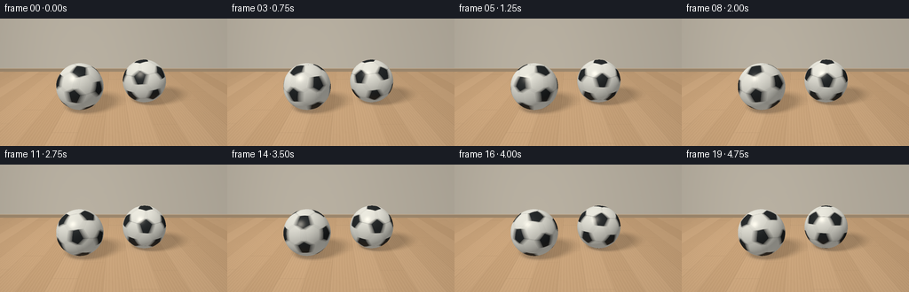
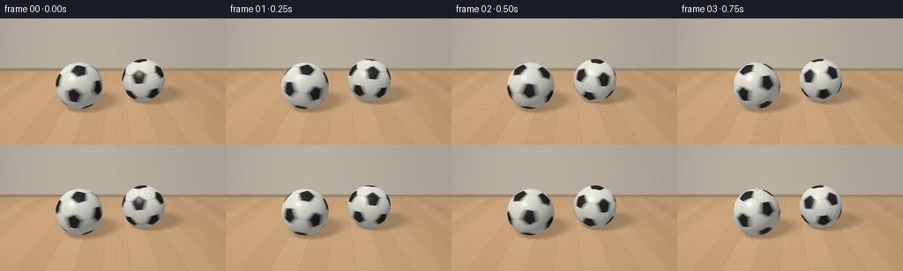

CODING AGENTS AS PIXEL WORLD MODELS
traex/GPT-6.1-Sol · instance_preservation_0027
点击播放 · 原生 RGB 像素
逐轮保存的候选
回放视频、检查图与代码变化。
每份候选均可单独播放。实际图片检查记录在下方工具轨迹中。
候选 01播放与检查图
点击播放 · 原生 RGB 像素


展开代码变化
--- 上一保存版本
+++ 本次保存版本
@@ -0,0 +1,220 @@
+"""Procedural RGB animation: two spinning footballs on a sunlit oak floor.
+Only analytic geometry, NumPy and Pillow are used.
+"""
+from pathlib import Path
+import itertools
+import json
+import numpy as np
+from PIL import Image
+import artifact_io
+
+ROOT = Path(__file__).resolve().parent
+SPEC = json.loads((ROOT/'task_spec.json').read_text())
+W,H = SPEC['width'], SPEC['height']
+SS = 3
+SW,SH = W*SS,H*SS
+rng = np.random.default_rng(418)
+
+def unit(x):
+ return x / np.maximum(np.linalg.norm(x,axis=-1,keepdims=True),1e-12)
+
+def rotation(axis,a):
+ x,y,z=unit(np.array(axis,dtype=float)); c,s=np.cos(a),np.sin(a)
+ k=np.array([[0,-z,y],[z,0,-x],[-y,x,0.]])
+ return c*np.eye(3)+(1-c)*np.outer([x,y,z],[x,y,z])+s*k
+
+# Exact truncated icosahedron. Radially projected faces form the sewn panels.
+phi=(1+np.sqrt(5))/2
+v=[]
+for a in [-1,1]:
+ for b in [-1,1]:
+ v.extend([(0,a,b*phi),(a,b*phi,0),(b*phi,0,a)])
+v=np.array(v,dtype=float)
+dist=np.linalg.norm(v[:,None]-v[None,:],axis=-1)
+edges=np.isclose(dist,2.)
+tri=[t for t in itertools.combinations(range(12),3) if all(edges[i,j] for i,j in itertools.combinations(t,2))]
+polys=[]; blacks=[]
+for i in range(12):
+ polys.append(np.array([(2*v[i]+v[j])/3 for j in range(12) if edges[i,j]])); blacks.append(True)
+for a,b,c in tri:
+ polys.append(np.array([(2*v[i]+v[j])/3 for i,j in [(a,b),(b,a),(b,c),(c,b),(c,a),(a,c)]])); blacks.append(False)
+planes=[]; seam_planes=[]
+for p in polys:
+ n=unit(p.mean(axis=0)); e1=unit(p[0]-n*np.dot(p[0],n)); e2=np.cross(n,e1)
+ order=np.argsort(np.arctan2(p@e2,p@e1)); p=p[order]
+ planes.append(n/np.mean(p@n))
+ q=unit(p); ep=unit(np.cross(q,np.roll(q,-1,axis=0)))
+ ep*=np.where((ep@n)[:,None]>0,1.,-1.)
+ seam_planes.append(ep)
+planes=np.array(planes)
+blacks=np.array(blacks)
+panel_variation=rng.uniform(-.022,.02,32)
+
+cam=np.array([0.,2.30,5.65])
+target=np.array([0.,.68,0.])
+fwd=unit(target-cam); right=unit(np.cross(fwd,[0,1,0])); up=np.cross(right,fwd)
+yy,xx=np.mgrid[0:SH,0:SW]
+fx=(xx+.5-SW/2)/(SW*.91)
+fy=(SH/2-yy-.5)/(SW*.91)
+rays=unit(fwd+fx[...,None]*right+fy[...,None]*up)
+R=.635
+centers=[np.array([-.91,R,.26]), np.array([.91,R,-.30])]
+light=unit(np.array([-3.2,5.8,3.7]))
+
+# A fixed indoor environment, with a rear wall and narrow skirting board.
+floor_t=-cam[1]/rays[...,1]
+floor_pos=cam+rays*floor_t[...,None]
+wall_z=-4.3
+wall_t=(wall_z-cam[2])/rays[...,2]
+wall_pos=cam+rays*wall_t[...,None]
+floormask=(floor_t>0)&(floor_t<wall_t)
+X,Z=floor_pos[...,0],floor_pos[...,2]
+board=np.floor((X+.21)/.57)
+u=(X+.21)/.57-board
+# Directional, nonrepeating-looking grain, and staggered end joints.
+wave=(np.sin(Z*2.4+board*2.7)*.13+np.sin(Z*.79+board)*.15)
+grain=np.sin(X*94+wave*7+np.sin(Z*1.3)*.7)
+fine=np.sin(X*318+np.sin(Z*3.9)*1.2+board*2.1)
+grain2=np.sin(X*171+np.sin(Z*.7+board)*3.3)
+board_tone=np.sin(board*2.41)*.025+np.sin(board*.72)*.012
+lum=.020*grain+.009*fine+.007*grain2+board_tone
+wood=np.stack([.61+lum,.385+lum*.75,.206+lum*.5],axis=-1)
+edge=np.minimum(u,1-u)
+seam=np.exp(-(edge/.008)**2)
+joint_phase=(Z+board*.81)%2.85
+joint=np.exp(-(np.minimum(joint_phase,2.85-joint_phase)/.007)**2)
+wood*=1-.15*seam[...,None]-.14*joint[...,None]
+# Irregular thin darker wood pores.
+pores=(np.maximum(0,np.sin(X*491+np.sin(Z*.32+board)*5))**18)*(0.5+.5*np.sin(Z*5+board))
+wood-=pores[...,None]*np.array([.013,.012,.009])
+# Broad warm window lighting and satin highlight across the floor.
+illum=.83+.18*np.exp(-((X+1.8)/3.5)**2-((Z-.1)/5.5)**2)
+wood*=illum[...,None]
+floor_view=unit(cam-floor_pos)
+halfvec=unit(floor_view+light)
+floor_spec=np.maximum(halfvec[...,1],0)**52*.11
+wood+=floor_spec[...,None]*np.array([1,.84,.66])
+
+# Soft area-light shadows, evaluated geometrically on the receiving floor.
+shadow=np.zeros((SH,SW))
+for k in range(24):
+ angle=k*2.399963
+ rad=np.sqrt((k+.5)/24)*1.45
+ lp=np.array([-3.2+rad*np.cos(angle),5.8,3.7+rad*np.sin(angle)])
+ ld=unit(lp-floor_pos)
+ occ=np.zeros((SH,SW),bool)
+ for c in centers:
+ oc=floor_pos-c
+ b=np.sum(oc*ld,axis=-1)
+ disc=b*b-(np.sum(oc*oc,axis=-1)-R*R)
+ occ|=(disc>0)&(b<0)
+ shadow+=occ/24
+wood*=1-.39*shadow[...,None]
+for c in centers:
+ dx=X-c[0]; dz=Z-c[2]
+ ao=np.exp(-((dx/.56)**2+(dz/.56)**2)*2.8)*.29
+ contact=np.exp(-((dx/.24)**2+(dz/.24)**2)*2.0)*.20
+ wood*=1-(ao+contact)[...,None]
+ # Subdued, broad reflected light under the ball, not a mirror.
+ reflection=np.exp(-((dx/.53)**2+((dz-c[1]*.22)/.51)**2)*2)*.047
+ wood+=reflection[...,None]*np.array([.60,.57,.49])
+
+wall=np.zeros_like(wood)
+wallgrad=.80+.11*np.exp(-((wall_pos[...,0]+2)/4)**2)
+wall[:]=np.array([.53,.48,.395])
+wall*=wallgrad[...,None]
+# Quiet fine plaster texture, fixed in world space.
+wallnoise=np.sin(wall_pos[...,0]*152)*np.sin(wall_pos[...,1]*157)*.0018
+wall+=wallnoise[...,None]
+base=(wall_pos[...,1]<.16)
+wall[base]=np.array([.33,.24,.15])
+trim=(wall_pos[...,1]>.14)&(wall_pos[...,1]<.17)
+wall[trim]=np.array([.53,.40,.27])
+bg=np.where(floormask[...,None],wood,wall)
+# Very mild photographic vignette.
+vignette=1-.095*((fx/.65)**2+(fy/.65)**2)
+
+# Cache all ray intersections. World silhouettes never change during rotation.
+objects=[]
+for j,c in enumerate(centers):
+ oc=cam-c
+ b=np.sum(rays*oc,axis=-1)
+ delta=b*b-(np.dot(oc,oc)-R*R)
+ mask=delta>0
+ inds=np.flatnonzero(mask)
+ rd=rays.reshape(-1,3)[inds]
+ t=-b.reshape(-1)[inds]-np.sqrt(delta.reshape(-1)[inds])
+ point=cam+rd*t[:,None]
+ normal=(point-c)/R
+ view=-rd
+ diffuse=np.maximum(normal@light,0)
+ h=unit(view+light)
+ # Fresnel, soft key illumination and dim environmental bounce.
+ specular=np.maximum(np.sum(normal*h,axis=1),0)**100
+ ndv=np.maximum(np.sum(normal*view,axis=1),0)
+ objects.append((inds,normal,diffuse,specular,ndv))
+
+def ball_color(j,t):
+ inds,n,diff,sp,ndv=objects[j]
+ # Off-symmetry initial orientations reveal unmistakably changing panels.
+ init=rotation([1,.2,.3],.66 if j==0 else 1.12)@rotation([0,0,1],.31 if j==0 else -.37)
+ speed=(1.72 if j==0 else -1.43)
+ # The spin stays rapid across the shot, with modest natural deceleration.
+ angle=2*np.pi*(speed*t-(.028 if j==0 else -.022)*t*t)
+ rot=rotation([0,1,0],angle)@init
+ local=n@rot
+ panel=np.argmax(local@planes.T,axis=1)
+ sd=np.empty(len(n))
+ for p in range(32):
+ use=panel==p
+ if np.any(use): sd[use]=np.min(local[use]@seam_planes[p].T,axis=1)
+ # Rounded recessed stitches separating slightly convex leather panels.
+ groove=np.exp(-(np.maximum(sd,0)/.0055)**2)
+ lip=np.exp(-((sd-.009)/.0035)**2)
+ dark=blacks[panel]
+ base=np.empty((len(n),3))
+ base[~dark]=[.79,.805,.785]
+ base[dark]=[.019,.023,.026]
+ base*=1+panel_variation[panel,None]
+ # A shallow pebble embossing attaches to the spinning material.
+ pebble=np.sin(local[:,0]*540+np.sin(local[:,2]*73)*.8)*np.sin(local[:,1]*515+np.sin(local[:,0]*69))
+ base*=1+pebble[:,None]*.021
+ base*=1-groove[:,None]*.80
+ base+=lip[:,None]*.012
+ ambient=.29+.14*np.maximum(n[:,1],0)+.035*np.maximum(-n[:,1],0)
+ shading=ambient+.64*diff
+ result=base*shading[:,None]*np.array([1.,.965,.89])
+ result+=sp[:,None]*np.array([.24,.225,.195])*(1-.65*groove[:,None])
+ # Broad sheen especially on the polished black leather.
+ broad=np.maximum(np.sum(n*unit(-rays.reshape(-1,3)[inds]+light),axis=1),0)**18
+ result+=broad[:,None]*np.array([.018,.020,.020])
+ # Very slight cream floor bounce around the lower hemisphere.
+ bounce=(np.maximum(-n[:,1],0)**2)[:,None]
+ result+=bounce*np.array([.030,.017,.007])
+ return result
+
+def encode(linear):
+ # Linear-light antialiasing and a soft display tone curve.
+ linear=np.clip(linear*vignette[...,None],0,1)
+ rgb=np.clip(1.055*np.power(linear,1/2.4)-.055,0,1)
+ hi=Image.fromarray(np.uint8(rgb*255+.5))
+ return np.asarray(hi.resize((W,H),Image.Resampling.LANCZOS))
+
+def main():
+ frames=[]
+ for i in range(SPEC['frames']):
+ t=i/SPEC['fps']
+ pic=bg.copy().reshape(-1,3)
+ for j,(inds,*_) in enumerate(objects):
+ # Short exposure: visible rapid rotation without losing panel identity.
+ colors=np.zeros((len(inds),3))
+ for dt in [-.011,-.0055,0,.0055,.011]:
+ colors+=ball_color(j,t+dt)/5
+ pic[inds]=colors
+ frames.append(encode(pic.reshape(SH,SW,3)))
+ print(f'Frame {i+1}/{SPEC["frames"]}',flush=True)
+ frames=np.stack(frames).astype(np.uint8)
+ artifact_io.save(frames,ROOT)
+ print('Saved RGB video and player.',flush=True)
+
+if __name__=='__main__': main()
可观测工具轨迹
实际执行的命令与返回图片。
命令 1exit 0
/bin/bash -lc "ls -la && cat prompt.txt && printf '\\n---RULES---\\n' && cat GENERATION_RULES.md && printf '\\n---SPEC---\\n' && cat task_spec.json"
命令 2exit 0
/bin/bash -lc "cat artifact_io.py && printf '\\n---PACKAGES---\\n' && python - <<'PY' import numpy,PIL print(numpy.__version__,PIL.__version__) PY"
命令 3exit 0
/bin/bash -lc "cat > generate.py <<'PY'
\"\"\"Procedural RGB animation: two spinning footballs on a sunlit oak floor.
Only analytic geometry, NumPy and Pillow are used.
\"\"\"
from pathlib import Path
import itertools
import json
import numpy as np
from PIL import Image
import artifact_io
ROOT = Path(__file__).resolve().parent
SPEC = json.loads((ROOT/'task_spec.json').read_text())
W,H = SPEC['width'], SPEC['height']
SS = 3
SW,SH = W*SS,H*SS
rng = np.random.default_rng(418)
def unit(x):
return x / np.maximum(np.linalg.norm(x,axis=-1,keepdims=True),1e-12)
def rotation(axis,a):
x,y,z=unit(np.array(axis,dtype=float)); c,s=np.cos(a),np.sin(a)
k=np.array([[0,-z,y],[z,0,-x],[-y,x,0.]])
return c*np.eye(3)+(1-c)*np.outer([x,y,z],[x,y,z])+s*k
# Exact truncated icosahedron. Radially projected faces form the sewn panels.
phi=(1+np.sqrt(5))/2
v=[]
for a in [-1,1]:
for b in [-1,1]:
v.extend([(0,a,b*phi),(a,b*phi,0),(b*phi,0,a)])
v=np.array(v,dtype=float)
dist=np.linalg.norm(v[:,None]-v[None,:],axis=-1)
edges=np.isclose(dist,2.)
tri=[t for t in itertools.combinations(range(12),3) if all(edges[i,j] for i,j in itertools.combinations(t,2))]
polys=[]; blacks=[]
for i in range(12):
polys.append(np.array([(2*v[i]+v[j])/3 for j in range(12) if edges[i,j]])); blacks.append(True)
for a,b,c in tri:
polys.append(np.array([(2*v[i]+v[j])/3 for i,j in [(a,b),(b,a),(b,c),(c,b),(c,a),(a,c)]])); blacks.append(False)
planes=[]; seam_planes=[]
for p in polys:
n=unit(p.mean(axis=0)); e1=unit(p[0]-n*np.dot(p[0],n)); e2=np.cross(n,e1)
order=np.argsort(np.arctan2(p@e2,p@e1)); p=p[order]
planes.append(n/np.mean(p@n))
q=unit(p); ep=unit(np.cross(q,np.roll(q,-1,axis=0)))
ep*=np.where((ep@n)[:,None]>0,1.,-1.)
seam_planes.append(ep)
planes=np.array(planes)
blacks=np.array(blacks)
panel_variation=rng.uniform(-.022,.02,32)
cam=np.array([0.,2.30,5.65])
target=np.array([0.,.68,0.])
fwd=unit(target-cam); right=unit(np.cross(fwd,[0,1,0])); up=np.cross(right,fwd)
yy,xx=np.mgrid[0:SH,0:SW]
fx=(xx+.5-SW/2)/(SW*.91)
fy=(SH/2-yy-.5)/(SW*.91)
rays=unit(fwd+fx[...,None]*right+fy[...,None]*up)
R=.635
centers=[np.array([-.91,R,.26]), np.array([.91,R,-.30])]
light=unit(np.array([-3.2,5.8,3.7]))
# A fixed indoor environment, with a rear wall and narrow skirting board.
floor_t=-cam[1]/rays[...,1]
floor_pos=cam+rays*floor_t[...,None]
wall_z=-4.3
wall_t=(wall_z-cam[2])/rays[...,2]
wall_pos=cam+rays*wall_t[...,None]
floormask=(floor_t>0)&(floor_t<wall_t)
X,Z=floor_pos[...,0],floor_pos[...,2]
board=np.floor((X+.21)/.57)
u=(X+.21)/.57-board
# Directional, nonrepeating-looking grain, and staggered end joints.
wave=(np.sin(Z*2.4+board*2.7)*.13+np.sin(Z*.79+board)*.15)
grain=np.sin(X*94+wave*7+np.sin(Z*1.3)*.7)
fine=np.sin(X*318+np.sin(Z*3.9)*1.2+board*2.1)
grain2=np.sin(X*171+np.sin(Z*.7+board)*3.3)
board_tone=np.sin(board*2.41)*.025+np.sin(board*.72)*.012
lum=.020*grain+.009*fine+.007*grain2+board_tone
wood=np.stack([.61+lum,.385+lum*.75,.206+lum*.5],axis=-1)
edge=np.minimum(u,1-u)
seam=np.exp(-(edge/.008)**2)
joint_phase=(Z+board*.81)%2.85
joint=np.exp(-(np.minimum(joint_phase,2.85-joint_phase)/.007)**2)
wood*=1-.15*seam[...,None]-.14*joint[...,None]
# Irregular thin darker wood pores.
pores=(np.maximum(0,np.sin(X*491+np.sin(Z*.32+board)*5))**18)*(0.5+.5*np.sin(Z*5+board))
wood-=pores[...,None]*np.array([.013,.012,.009])
# Broad warm window lighting and satin highlight across the floor.
illum=.83+.18*np.exp(-((X+1.8)/3.5)**2-((Z-.1)/5.5)**2)
wood*=illum[...,None]
floor_view=unit(cam-floor_pos)
halfvec=unit(floor_view+light)
floor_spec=np.maximum(halfvec[...,1],0)**52*.11
wood+=floor_spec[...,None]*np.array([1,.84,.66])
# Soft area-light shadows, evaluated geometrically on the receiving floor.
shadow=np.zeros((SH,SW))
for k in range(24):
angle=k*2.399963
rad=np.sqrt((k+.5)/24)*1.45
lp=np.array([-3.2+rad*np.cos(angle),5.8,3.7+rad*np.sin(angle)])
ld=unit(lp-floor_pos)
occ=np.zeros((SH,SW),bool)
for c in centers:
oc=floor_pos-c
b=np.sum(oc*ld,axis=-1)
disc=b*b-(np.sum(oc*oc,axis=-1)-R*R)
occ|=(disc>0)&(b<0)
shadow+=occ/24
wood*=1-.39*shadow[...,None]
for c in centers:
dx=X-c[0]; dz=Z-c[2]
ao=np.exp(-((dx/.56)**2+(dz/.56)**2)*2.8)*.29
contact=np.exp(-((dx/.24)**2+(dz/.24)**2)*2.0)*.20
wood*=1-(ao+contact)[...,None]
# Subdued, broad reflected light under the ball, not a mirror.
reflection=np.exp(-((dx/.53)**2+((dz-c[1]*.22)/.51)**2)*2)*.047
wood+=reflection[...,None]*np.array([.60,.57,.49])
wall=np.zeros_like(wood)
wallgrad=.80+.11*np.exp(-((wall_pos[...,0]+2)/4)**2)
wall[:]=np.array([.53,.48,.395])
wall*=wallgrad[...,None]
# Quiet fine plaster texture, fixed in world space.
wallnoise=np.sin(wall_pos[...,0]*152)*np.sin(wall_pos[...,1]*157)*.0018
wall+=wallnoise[...,None]
base=(wall_pos[...,1]<.16)
wall[base]=np.array([.33,.24,.15])
trim=(wall_pos[...,1]>.14)&(wall_pos[...,1]<.17)
wall[trim]=np.array([.53,.40,.27])
bg=np.where(floormask[...,None],wood,wall)
# Very mild photographic vignette.
vignette=1-.095*((fx/.65)**2+(fy/.65)**2)
# Cache all ray intersections. World silhouettes never change during rotation.
objects=[]
for j,c in enumerate(centers):
oc=cam-c
b=np.sum(rays*oc,axis=-1)
delta=b*b-(np.dot(oc,oc)-R*R)
mask=delta>0
inds=np.flatnonzero(mask)
rd=rays.reshape(-1,3)[inds]
t=-b.reshape(-1)[inds]-np.sqrt(delta.reshape(-1)[inds])
point=cam+rd*t[:,None]
normal=(point-c)/R
view=-rd
diffuse=np.maximum(normal@light,0)
h=unit(view+light)
# Fresnel, soft key illumination and dim environmental bounce.
specular=np.maximum(np.sum(normal*h,axis=1),0)**100
ndv=np.maximum(np.sum(normal*view,axis=1),0)
objects.append((inds,normal,diffuse,specular,ndv))
def ball_color(j,t):
inds,n,diff,sp,ndv=objects[j]
# Off-symmetry initial orientations reveal unmistakably changing panels.
init=rotation([1,.2,.3],.66 if j==0 else 1.12)@rotation([0,0,1],.31 if j==0 else -.37)
speed=(1.72 if j==0 else -1.43)
# The spin stays rapid across the shot, with modest natural deceleration.
angle=2*np.pi*(speed*t-(.028 if j==0 else -.022)*t*t)
rot=rotation([0,1,0],angle)@init
local=n@rot
panel=np.argmax(local@planes.T,axis=1)
sd=np.empty(len(n))
for p in range(32):
use=panel==p
if np.any(use): sd[use]=np.min(local[use]@seam_planes[p].T,axis=1)
# Rounded recessed stitches separating slightly convex leather panels.
groove=np.exp(-(np.maximum(sd,0)/.0055)**2)
lip=np.exp(-((sd-.009)/.0035)**2)
dark=blacks[panel]
base=np.empty((len(n),3))
base[~dark]=[.79,.805,.785]
base[dark]=[.019,.023,.026]
base*=1+panel_variation[panel,None]
# A shallow pebble embossing attaches to the spinning material.
pebble=np.sin(local[:,0]*540+np.sin(local[:,2]*73)*.8)*np.sin(local[:,1]*515+np.sin(local[:,0]*69))
base*=1+pebble[:,None]*.021
base*=1-groove[:,None]*.80
base+=lip[:,None]*.012
ambient=.29+.14*np.maximum(n[:,1],0)+.035*np.maximum(-n[:,1],0)
shading=ambient+.64*diff
result=base*shading[:,None]*np.array([1.,.965,.89])
result+=sp[:,None]*np.array([.24,.225,.195])*(1-.65*groove[:,None])
# Broad sheen especially on the polished black leather.
broad=np.maximum(np.sum(n*unit(-rays.reshape(-1,3)[inds]+light),axis=1),0)**18
result+=broad[:,None]*np.array([.018,.020,.020])
# Very slight cream floor bounce around the lower hemisphere.
bounce=(np.maximum(-n[:,1],0)**2)[:,None]
result+=bounce*np.array([.030,.017,.007])
return result
def encode(linear):
# Linear-light antialiasing and a soft display tone curve.
linear=np.clip(linear*vignette[...,None],0,1)
rgb=np.clip(1.055*np.power(linear,1/2.4)-.055,0,1)
hi=Image.fromarray(np.uint8(rgb*255+.5))
return np.asarray(hi.resize((W,H),Image.Resampling.LANCZOS))
def main():
frames=[]
for i in range(SPEC['frames']):
t=i/SPEC['fps']
pic=bg.copy().reshape(-1,3)
for j,(inds,*_) in enumerate(objects):
# Short exposure: visible rapid rotation without losing panel identity.
colors=np.zeros((len(inds),3))
for dt in [-.011,-.0055,0,.0055,.011]:
colors+=ball_color(j,t+dt)/5
pic[inds]=colors
frames.append(encode(pic.reshape(SH,SW,3)))
print(f'Frame {i+1}/{SPEC[\"frames\"]}',flush=True)
frames=np.stack(frames).astype(np.uint8)
artifact_io.save(frames,ROOT)
print('Saved RGB video and player.',flush=True)
if __name__=='__main__': main()
PY
OPENBLAS_NUM_THREADS=1 python generate.py"命令 4exit 0
/bin/bash -lc "python - <<'PY'
import numpy as np
from pathlib import Path
import shutil
p=Path('.')
a=np.load('pixels.npz')['pixels']
assert a.shape==(144,256,20)
files=list(Path('frames').glob('*.png'))
assert len(files)==20
print('Verified:',a.shape,'packed RGB; 20 PNG frames; interactive player:',Path('index.html').exists())
print('ffmpeg:',shutil.which('ffmpeg'))
PY"保存候选 1 份；完成命令 4 次；可验证图片返回 0 张。原始 API 响应与完整日志保留在本地。